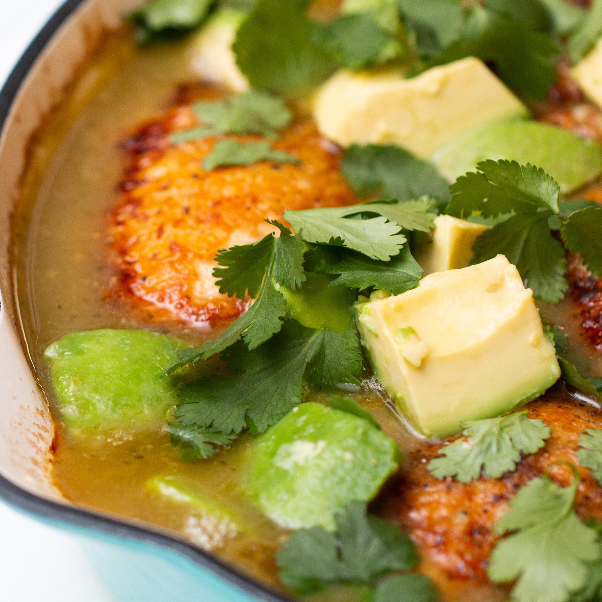

Back
Salsa-Braised Chicken With Avocado Recipe
By Tikeyah Whittle & Karlee Rotoly
Total time: 1hr 15mins

Store-bought salsa gets a glow-up in this easy braised chicken recipe. Chicken thighs are
browned until crispy, then baked in a salsa verde and white wine sauce until tender all the way
through. Topped with cilantro and avocado, this dish is as fresh as it is easy to make!
Ingriedients
(Makes 4 servings)
- 6 bone-in, skin-on chicken thighs
- kosher salt, to taste
- freshly ground black pepper, to taste
- half cup white wine (120 mL)
- 3 cups store bought salsa verde (375 g)
- 2 ripe avocados, pitted, peeled, and
cubed
- quarter cup fresh cilantro (10 g)
- warmed tortilla, for serving (optional)
Instructions
- Preheat the oven to 400°F (200°C).
- Season the chicken thighs all over with salt and pepper. Working in batches if
necessary, arrange the thighs skin-side down in a cold, large oven-proof skillet.
Place the skillet over medium heat and cook the chicken thighs, undisturbed,
until the skin is golden brown and the thighs naturally release from the skillet,
12 to 15 minutes. Using tongs, transfer the thighs to paper towels.
- Pour the wine and salsa verde into the skillet and stir to combine with the
rendered fat and scrape up any browned bits from the bottom of the pan, then
remove the skillet from the heat. Return the thighs to the skillet, skin-side up, so
they are half submerged in the sauce. Transfer the skillet to the oven and bake
until the chicken is cooked through and tender and the sauce has reduced and
thickened, about 30 minutes.
- Remove the skillet from the oven, scatter the cubed avocados evenly around the
chicken in the sauce, and let the chicken rest in the sauce for 10 minutes.
- Sprinkle with the cilantro and serve with tortillas on the side, if desired.
- Enjoy!
Nutrition Info (per serving)
- 950 Calories
- 67g Fat
- 21g Carbs
- 5g Fiber
- 48g Protein
Back